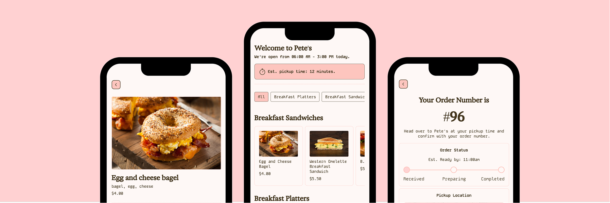
The Overview
Pete’s Little Lunch Box is a well-loved food truck on Drexel’s campus, but it currently doesn’t have a digital ordering system. Customers have to wait in line to browse the menu, decide what they want, and place their order without knowing how long it might take.
Our team, BARC, set out to turn a previous UX concept into a working, web-based, ordering prototype that would make the process smoother and easier for customers. The final product allows users to browse the menu, customize items, review pricing, move through checkout, and track their order status.
This was a team project where each member had specific roles. My primary role was Data Architect, and my secondary role was UX Designer. I focused on organizing the project’s internal systems, structuring menu data for development, collaborating on the design system, conducting user testing, and compiling feedback that helped improve the final product.
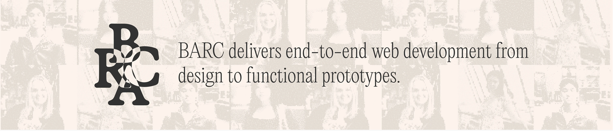
The Context and Challenge
Background / Description / Timeline / Budget / Purpose
This project was completed in IDM 216 – User Experience Design II as part of a team assignment. The goal was to take a UX concept that had already been designed and turn it into a functioning coded prototype.
Throughout the term, our team worked through multiple stages of the product process, including planning, organizing project materials, refining the design, running user testing sessions, and implementing the final prototype.
Since this was a class project, there was no external client or budget. Instead, the goal was to simulate a real-world workflow where each team member had a defined role and contributed to building a working product.
The Problem
Pete’s Little Lunch Box currently operates without a digital ordering option. Customers have to physically wait in line to browse menu items, customize their food, and place their order.
This creates a few clear issues:
- Long lines during busy hours
- No way to browse the menu beforehand
- Limited visibility into wait times
- A slower and less convenient ordering experience
The goal of the project was to design a digital ordering experience that made the process faster, clearer, and easier for users.
Goals & Objectives
The main goal of the project was to create a working ordering prototype that allowed users to:
- Browse menu items digitally
- Customize their food selections
- Move through checkout
- Track their order status
Another goal was keeping the team workflow organized. Because the project involved both design and development work, it was important that files, assets, and documentation were structured in a way that everyone could easily access and understand.
Success for this project meant delivering a working prototype that supported the full ordering flow while incorporating improvements based on user testing.
The Process and Insight
This project was built through collaboration between multiple team members. My work focused mainly on Data Architecture and UX Design, helping support both the structure of the project and the usability of the final product.
Data Architect
Information Organization & Documentation
As Data Architect, I was responsible for organizing many of the systems behind the project. I structured and organized our project files within Microsoft Teams so documentation, design files, and development resources were easy for the team to find and use.
I also created consistent naming conventions for project files and helped organize the project wiki. This made it easier for the team to keep track of deliverables and reference documentation throughout the project.
Data Structuring for Development
Another important part of my role was preparing the menu data so it could eventually be used during development.
I converted the menu content into structured spreadsheets and organized the information into categories and fields that could translate easily into a database structure. This included making sure item names, descriptions, prices, and menu categories were all formatted consistently.
Asset Management
I also collected and organized all menu item images used in the interface. These assets were clearly labeled and stored in an organized system so they could be easily integrated into the front-end during development.
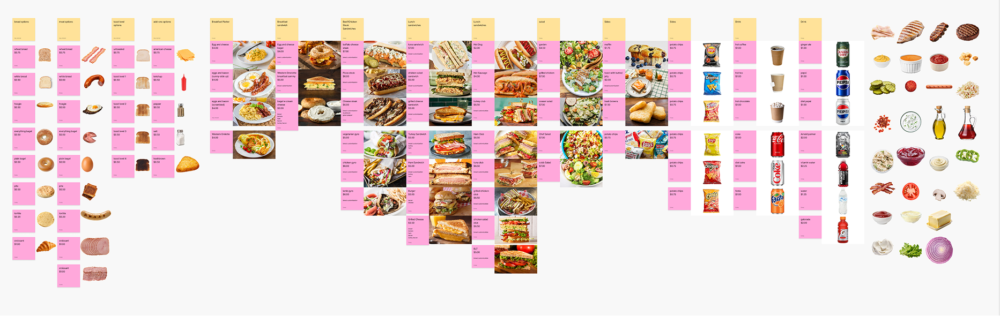
UX Designer
User Personas
As part of the UX design process, I helped refine the user personas used to guide the project. These personas were based on the types of customers who typically visit food trucks on Drexel’s campus, such as students looking for quick and convenient meal options between classes.
Working with the team, I helped adjust the personas so they more accurately reflected the needs and behaviors of our target users. This included identifying common goals such as minimizing wait times, quickly browsing menu options, and customizing orders efficiently. These personas helped guide several design decisions throughout the project, especially when evaluating how intuitive the ordering flow felt for users.
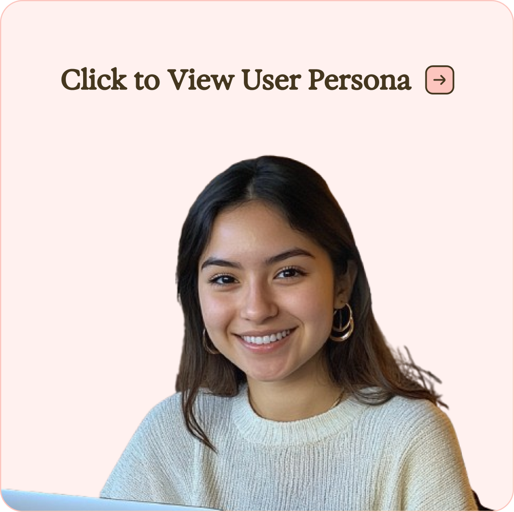
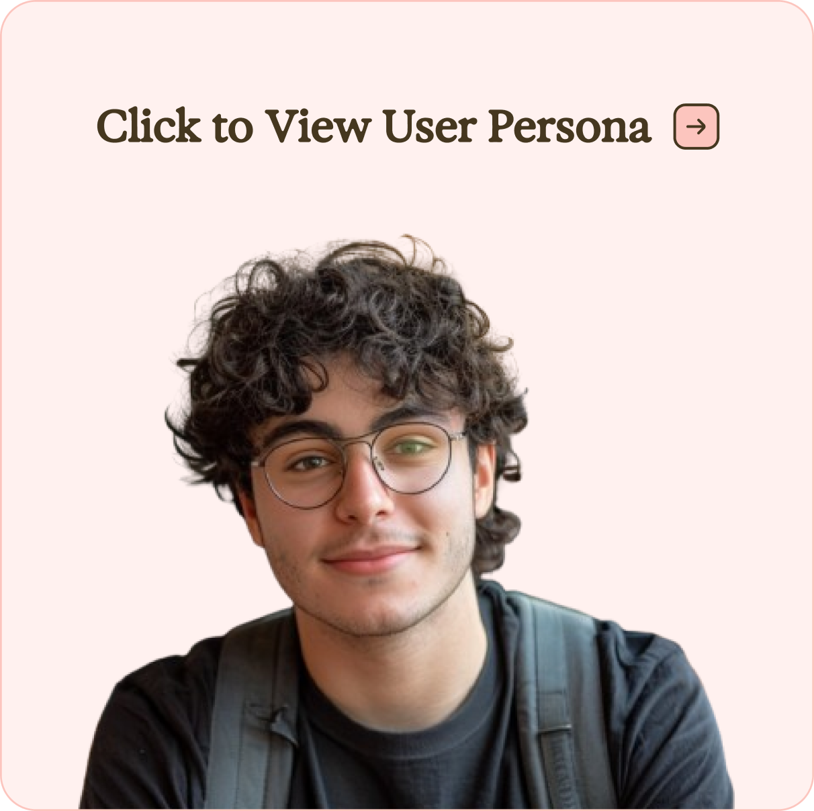
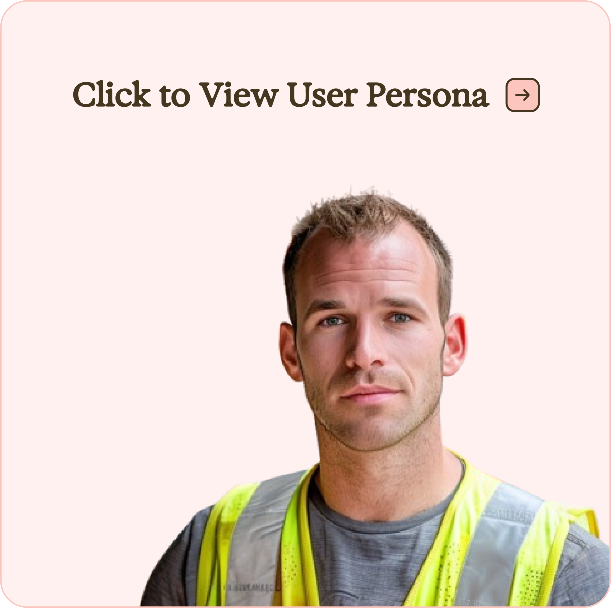
Design System Collaboration
I collaborated with the primary UX designer to finalize the visual design system used throughout the app. This involved helping define the interface style, layout consistency, and visual hierarchy so the ordering experience felt clear and cohesive.
User Testing & Research
I planned and conducted multiple rounds of usability testing for both the Figma prototype and the beta HTML prototype. I wrote the participant consent script used during testing sessions and developed the interview questions that guided each session.
During testing sessions, I observed how users interacted with the prototype and documented areas where they hesitated or experienced confusion. These observations helped reveal opportunities to improve the interface.
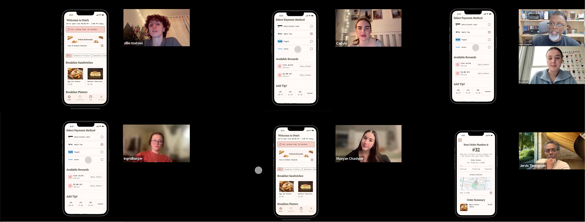
Research Analysis
After each testing round, I compiled the feedback and identified patterns in user behavior. I summarized usability issues and presented key insights to the team along with recommendations for improvements.
Usability Improvements
Based on the testing results, I proposed adjustments to improve clarity and usability within the interface. These suggestions helped guide the design iterations that followed.
Quality Assurance
I also conducted additional testing by repeatedly running through the critical ordering flow and exploring edge cases. This helped identify inconsistencies or unexpected behaviors that needed to be addressed before the final prototype was completed.
Team Collaboration
Although everyone had their own roles, this project relied heavily on teamwork and could not have been executed without everyone’s collective contributions. Many design decisions were made together as a group, especially when reviewing usability testing results and deciding which improvements should be implemented.
My main responsibilities were organizing project systems, structuring menu data, supporting the design system, conducting usability testing, and compiling research insights that helped guide design improvements.
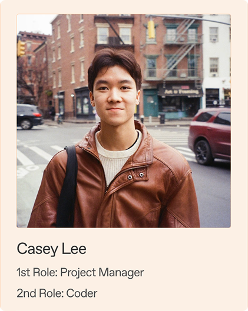
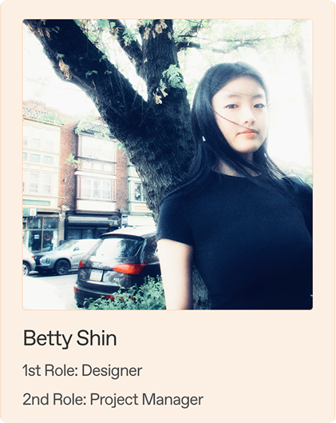
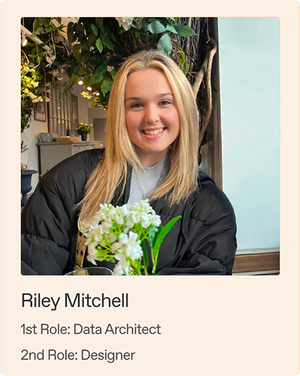
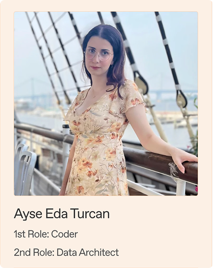
The Solution
The final solution was a web-based ordering prototype that allows users to browse the menu, customize items, review pricing, and move through checkout in a clear and structured ordering flow.
Key features include:
- Full digital menu browsing
- Item customization
- Cart and checkout flow
- Order status tracking
The design focuses on clarity and usability so users can easily move through the ordering process without any sort of confusion.
My contributions supported both the visible interface and the systems behind the scenes. I helped refine the design through usability testing and design collaboration while also organizing the data, assets, and documentation needed for development.
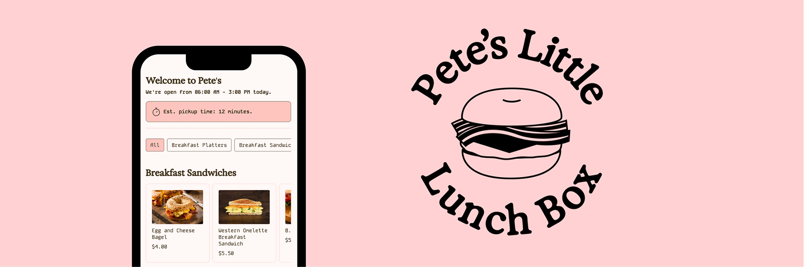
Live Project Link: Pete’s Little Lunch Box Ordering App
The Results
The project resulted in a working prototype that demonstrated a complete ordering experience from browsing menu items to checkout and order tracking.
User testing helped reveal usability issues early in the process, allowing the team to make improvements before the final delivery.
One of the biggest takeaways from this project was how important organization and structure are when working on collaborative design projects. Clear documentation, well-structured data, and thoughtful user testing all played a role in helping the team deliver a more functional product.
If this project were developed further, additional rounds of user testing and further refinement of edge cases would help continue improving the ordering experience.